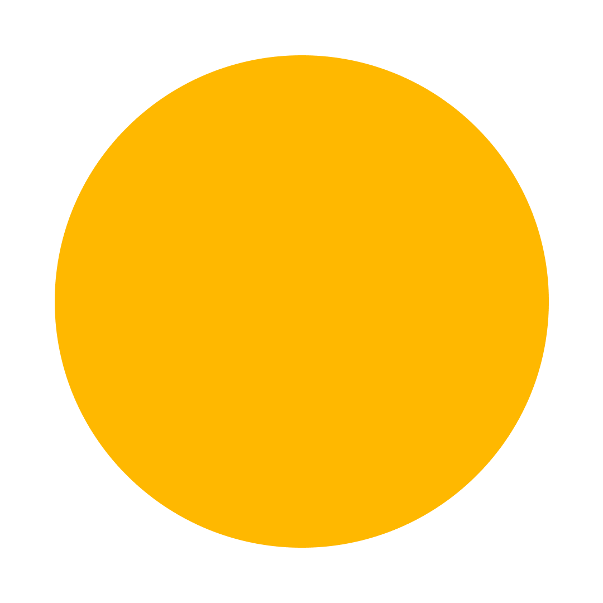

1970-е
1972 — Pong
Первая аркадная видеоигра от Atari. Простая имитация настольного тенниса.
1978 — Space Invaders
Классическая аркада, положившая начало жанру шутеров.
1980-е
1980 — Pac-Man
Игра с лабиринтом и привидениями, ставшая культовой.
1986 — The Legend of Zelda
Первая приключенческая игра с открытым миром и головоломками.
1990-е
1991 — Sonic the Hedgehog
Быстрый ёж от Sega, символ 90-х.
1998 — Half-Life
Шутер с сильным сюжетом и новой подачей.
2000-е
2001 — Halo
Революция в жанре шутеров от первого лица.
2004 — World of Warcraft
Онлайн-игра, которая объединила миллионы игроков.
2010-е
2011 — Minecraft
Игра, где можно строить всё из блоков.
2013 — The Last of Us
Эмоциональная история о выживании.
2020-е
2020 — Cyberpunk 2077
Амбициозная RPG о будущем мегаполиса.
2023 — Baldur’s Gate 3
Ролевая игра с выбором, свободой и большим сюжетом.